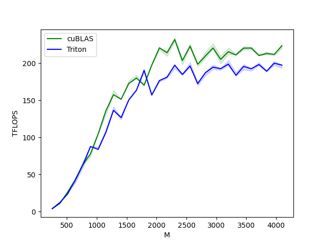
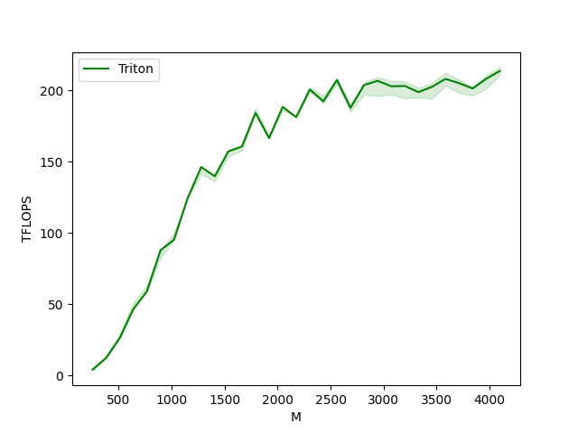

Note
Go to the end to download the full example code.
Matrix Multiplication¶
In this tutorial, you will write a very short high-performance FP16 matrix multiplication kernel that achieves performance on par with cuBLAS or rocBLAS.
You will specifically learn about:
Block-level matrix multiplications.
Multi-dimensional pointer arithmetic.
Program re-ordering for improved L2 cache hit rate.
Automatic performance tuning.
Motivations¶
Matrix multiplications are a key building block of most modern high-performance computing systems. They are notoriously hard to optimize, hence their implementation is generally done by hardware vendors themselves as part of so-called “kernel libraries” (e.g., cuBLAS). Unfortunately, these libraries are often proprietary and cannot be easily customized to accommodate the needs of modern deep learning workloads (e.g., fused activation functions). In this tutorial, you will learn how to implement efficient matrix multiplications by yourself with Triton, in a way that is easy to customize and extend.
Roughly speaking, the kernel that we will write will implement the following blocked algorithm to multiply a (M, K) by a (K, N) matrix:
# Do in parallel for m in range(0, M, BLOCK_SIZE_M): # Do in parallel for n in range(0, N, BLOCK_SIZE_N): acc = zeros((BLOCK_SIZE_M, BLOCK_SIZE_N), dtype=float32) for k in range(0, K, BLOCK_SIZE_K): a = A[m : m+BLOCK_SIZE_M, k : k+BLOCK_SIZE_K] b = B[k : k+BLOCK_SIZE_K, n : n+BLOCK_SIZE_N] acc += dot(a, b) C[m : m+BLOCK_SIZE_M, n : n+BLOCK_SIZE_N] = acc
where each iteration of the doubly-nested for-loop is performed by a dedicated Triton program instance.
Compute Kernel¶
The above algorithm is, actually, fairly straightforward to implement in Triton.
The main difficulty comes from the computation of the memory locations at which blocks
of A and B must be read in the inner loop. For that, we need
multi-dimensional pointer arithmetic.
Pointer Arithmetic¶
For a row-major 2D tensor X, the memory location of X[i, j] is given
by &X[i, j] = X + i*stride_xi + j*stride_xj.
Therefore, blocks of pointers for A[m : m+BLOCK_SIZE_M, k:k+BLOCK_SIZE_K] and
B[k : k+BLOCK_SIZE_K, n : n+BLOCK_SIZE_N] can be defined in pseudo-code as:
&A[m : m+BLOCK_SIZE_M, k:k+BLOCK_SIZE_K] = a_ptr + (m : m+BLOCK_SIZE_M)[:, None]*A.stride(0) + (k : k+BLOCK_SIZE_K)[None, :]*A.stride(1); &B[k : k+BLOCK_SIZE_K, n:n+BLOCK_SIZE_N] = b_ptr + (k : k+BLOCK_SIZE_K)[:, None]*B.stride(0) + (n : n+BLOCK_SIZE_N)[None, :]*B.stride(1);
Which means that pointers for blocks of A and B can be initialized (i.e., k=0) in Triton as the following
code. Also note that we need an extra modulo to handle the case where M is not a multiple of
BLOCK_SIZE_M or N is not a multiple of BLOCK_SIZE_N, in which case we can pad the data with
some useless values, which will not contribute to the results. For the K dimension, we will handle that later
using masking load semantics.
offs_am = (pid_m * BLOCK_SIZE_M + tl.arange(0, BLOCK_SIZE_M)) % M offs_bn = (pid_n * BLOCK_SIZE_N + tl.arange(0, BLOCK_SIZE_N)) % N offs_k = tl.arange(0, BLOCK_SIZE_K) a_ptrs = a_ptr + (offs_am[:, None]*stride_am + offs_k [None, :]*stride_ak) b_ptrs = b_ptr + (offs_k [:, None]*stride_bk + offs_bn[None, :]*stride_bn)
And then updated in the inner loop as follows:
a_ptrs += BLOCK_SIZE_K * stride_ak; b_ptrs += BLOCK_SIZE_K * stride_bk;
L2 Cache Optimizations¶
As mentioned above, each program instance computes a [BLOCK_SIZE_M, BLOCK_SIZE_N]
block of C.
It is important to remember that the order in which these blocks are computed does
matter, since it affects the L2 cache hit rate of our program, and unfortunately, a
simple row-major ordering
pid = tl.program_id(axis=0) grid_n = tl.cdiv(N, BLOCK_SIZE_N) pid_m = pid // grid_n pid_n = pid % grid_n
is just not going to cut it.
One possible solution is to launch blocks in an order that promotes data reuse.
This can be done by ‘super-grouping’ blocks in groups of GROUP_M rows before
switching to the next column:
# Program ID pid = tl.program_id(axis=0) # Number of program ids along the M axis num_pid_m = tl.cdiv(M, BLOCK_SIZE_M) # Number of programs ids along the N axis num_pid_n = tl.cdiv(N, BLOCK_SIZE_N) # Number of programs in group num_pid_in_group = GROUP_SIZE_M * num_pid_n # Id of the group this program is in group_id = pid // num_pid_in_group # Row-id of the first program in the group first_pid_m = group_id * GROUP_SIZE_M # If `num_pid_m` isn't divisible by `GROUP_SIZE_M`, the last group is smaller group_size_m = min(num_pid_m - first_pid_m, GROUP_SIZE_M) # *Within groups*, programs are ordered in a column-major order # Row-id of the program in the *launch grid* pid_m = first_pid_m + ((pid % num_pid_in_group) % group_size_m) # Col-id of the program in the *launch grid* pid_n = (pid % num_pid_in_group) // group_size_m
For example, in the following matmul where each matrix is 9 blocks by 9 blocks, we can see that if we compute the output in row-major ordering, we need to load 90 blocks into SRAM to compute the first 9 output blocks, but if we do it in grouped ordering, we only need to load 54 blocks.

In practice, this can improve the performance of our matrix multiplication kernel by more than 10% on some hardware architecture (e.g., 220 to 245 TFLOPS on A100).
Final Result¶
import torch
import triton
import triton.language as tl
def is_cuda():
return triton.runtime.driver.active.get_current_target().backend == "cuda"
def is_hip_mi200():
target = triton.runtime.driver.active.get_current_target()
return target.backend == 'hip' and target.arch == 'gfx90a'
def get_cuda_autotune_config():
return [
triton.Config({'BLOCK_SIZE_M': 128, 'BLOCK_SIZE_N': 256, 'BLOCK_SIZE_K': 64, 'GROUP_SIZE_M': 8}, num_stages=3,
num_warps=8),
triton.Config({'BLOCK_SIZE_M': 64, 'BLOCK_SIZE_N': 256, 'BLOCK_SIZE_K': 32, 'GROUP_SIZE_M': 8}, num_stages=4,
num_warps=4),
triton.Config({'BLOCK_SIZE_M': 128, 'BLOCK_SIZE_N': 128, 'BLOCK_SIZE_K': 32, 'GROUP_SIZE_M': 8}, num_stages=4,
num_warps=4),
triton.Config({'BLOCK_SIZE_M': 128, 'BLOCK_SIZE_N': 64, 'BLOCK_SIZE_K': 32, 'GROUP_SIZE_M': 8}, num_stages=4,
num_warps=4),
triton.Config({'BLOCK_SIZE_M': 64, 'BLOCK_SIZE_N': 128, 'BLOCK_SIZE_K': 32, 'GROUP_SIZE_M': 8}, num_stages=4,
num_warps=4),
triton.Config({'BLOCK_SIZE_M': 128, 'BLOCK_SIZE_N': 32, 'BLOCK_SIZE_K': 32, 'GROUP_SIZE_M': 8}, num_stages=4,
num_warps=4),
triton.Config({'BLOCK_SIZE_M': 64, 'BLOCK_SIZE_N': 32, 'BLOCK_SIZE_K': 32, 'GROUP_SIZE_M': 8}, num_stages=5,
num_warps=2),
triton.Config({'BLOCK_SIZE_M': 32, 'BLOCK_SIZE_N': 64, 'BLOCK_SIZE_K': 32, 'GROUP_SIZE_M': 8}, num_stages=5,
num_warps=2),
# Good config for fp8 inputs.
triton.Config({'BLOCK_SIZE_M': 128, 'BLOCK_SIZE_N': 256, 'BLOCK_SIZE_K': 128, 'GROUP_SIZE_M': 8}, num_stages=3,
num_warps=8),
triton.Config({'BLOCK_SIZE_M': 256, 'BLOCK_SIZE_N': 128, 'BLOCK_SIZE_K': 128, 'GROUP_SIZE_M': 8}, num_stages=3,
num_warps=8),
triton.Config({'BLOCK_SIZE_M': 256, 'BLOCK_SIZE_N': 64, 'BLOCK_SIZE_K': 128, 'GROUP_SIZE_M': 8}, num_stages=4,
num_warps=4),
triton.Config({'BLOCK_SIZE_M': 64, 'BLOCK_SIZE_N': 256, 'BLOCK_SIZE_K': 128, 'GROUP_SIZE_M': 8}, num_stages=4,
num_warps=4),
triton.Config({'BLOCK_SIZE_M': 128, 'BLOCK_SIZE_N': 128, 'BLOCK_SIZE_K': 128, 'GROUP_SIZE_M': 8}, num_stages=4,
num_warps=4),
triton.Config({'BLOCK_SIZE_M': 128, 'BLOCK_SIZE_N': 64, 'BLOCK_SIZE_K': 64, 'GROUP_SIZE_M': 8}, num_stages=4,
num_warps=4),
triton.Config({'BLOCK_SIZE_M': 64, 'BLOCK_SIZE_N': 128, 'BLOCK_SIZE_K': 64, 'GROUP_SIZE_M': 8}, num_stages=4,
num_warps=4),
triton.Config({'BLOCK_SIZE_M': 128, 'BLOCK_SIZE_N': 32, 'BLOCK_SIZE_K': 64, 'GROUP_SIZE_M': 8}, num_stages=4,
num_warps=4)
]
def get_hip_autotune_config():
return [
triton.Config(
{'BLOCK_SIZE_M': 128, 'BLOCK_SIZE_N': 256, 'BLOCK_SIZE_K': 16, 'GROUP_SIZE_M': 1, 'waves_per_eu': 2},
num_warps=4, num_stages=2),
triton.Config(
{'BLOCK_SIZE_M': 256, 'BLOCK_SIZE_N': 256, 'BLOCK_SIZE_K': 16, 'GROUP_SIZE_M': 4, 'waves_per_eu': 2},
num_warps=8, num_stages=2),
triton.Config(
{'BLOCK_SIZE_M': 128, 'BLOCK_SIZE_N': 128, 'BLOCK_SIZE_K': 32, 'GROUP_SIZE_M': 1, 'waves_per_eu': 2},
num_warps=8, num_stages=2),
triton.Config(
{'BLOCK_SIZE_M': 64, 'BLOCK_SIZE_N': 128, 'BLOCK_SIZE_K': 32, 'GROUP_SIZE_M': 8, 'waves_per_eu': 3},
num_warps=4, num_stages=2),
triton.Config(
{'BLOCK_SIZE_M': 64, 'BLOCK_SIZE_N': 64, 'BLOCK_SIZE_K': 32, 'GROUP_SIZE_M': 1, 'waves_per_eu': 8},
num_warps=4, num_stages=2),
]
def get_autotune_config():
if is_cuda():
return get_cuda_autotune_config()
else:
return get_hip_autotune_config()
# `triton.jit`'ed functions can be auto-tuned by using the `triton.autotune` decorator, which consumes:
# - A list of `triton.Config` objects that define different configurations of
# meta-parameters (e.g., `BLOCK_SIZE_M`) and compilation options (e.g., `num_warps`) to try
# - An auto-tuning *key* whose change in values will trigger evaluation of all the
# provided configs
@triton.autotune(
configs=get_autotune_config(),
key=['M', 'N', 'K'],
)
@triton.jit
def matmul_kernel(
# Pointers to matrices
a_ptr, b_ptr, c_ptr,
# Matrix dimensions
M, N, K,
# The stride variables represent how much to increase the ptr by when moving by 1
# element in a particular dimension. E.g. `stride_am` is how much to increase `a_ptr`
# by to get the element one row down (A has M rows).
stride_am, stride_ak, #
stride_bk, stride_bn, #
stride_cm, stride_cn,
# Meta-parameters
BLOCK_SIZE_M: tl.constexpr, BLOCK_SIZE_N: tl.constexpr, BLOCK_SIZE_K: tl.constexpr, #
GROUP_SIZE_M: tl.constexpr, #
ACTIVATION: tl.constexpr #
):
"""Kernel for computing the matmul C = A x B.
A has shape (M, K), B has shape (K, N) and C has shape (M, N)
"""
# -----------------------------------------------------------
# Map program ids `pid` to the block of C it should compute.
# This is done in a grouped ordering to promote L2 data reuse.
# See above `L2 Cache Optimizations` section for details.
pid = tl.program_id(axis=0)
num_pid_m = tl.cdiv(M, BLOCK_SIZE_M)
num_pid_n = tl.cdiv(N, BLOCK_SIZE_N)
num_pid_in_group = GROUP_SIZE_M * num_pid_n
group_id = pid // num_pid_in_group
first_pid_m = group_id * GROUP_SIZE_M
group_size_m = min(num_pid_m - first_pid_m, GROUP_SIZE_M)
pid_m = first_pid_m + ((pid % num_pid_in_group) % group_size_m)
pid_n = (pid % num_pid_in_group) // group_size_m
# ----------------------------------------------------------
# Create pointers for the first blocks of A and B.
# We will advance this pointer as we move in the K direction
# and accumulate
# `a_ptrs` is a block of [BLOCK_SIZE_M, BLOCK_SIZE_K] pointers
# `b_ptrs` is a block of [BLOCK_SIZE_K, BLOCK_SIZE_N] pointers
# See above `Pointer Arithmetic` section for details
offs_am = (pid_m * BLOCK_SIZE_M + tl.arange(0, BLOCK_SIZE_M)) % M
offs_bn = (pid_n * BLOCK_SIZE_N + tl.arange(0, BLOCK_SIZE_N)) % N
offs_k = tl.arange(0, BLOCK_SIZE_K)
a_ptrs = a_ptr + (offs_am[:, None] * stride_am + offs_k[None, :] * stride_ak)
b_ptrs = b_ptr + (offs_k[:, None] * stride_bk + offs_bn[None, :] * stride_bn)
# -----------------------------------------------------------
# Iterate to compute a block of the C matrix.
# We accumulate into a `[BLOCK_SIZE_M, BLOCK_SIZE_N]` block
# of fp32 values for higher accuracy.
# `accumulator` will be converted back to fp16 after the loop.
accumulator = tl.zeros((BLOCK_SIZE_M, BLOCK_SIZE_N), dtype=tl.float32)
for k in range(0, tl.cdiv(K, BLOCK_SIZE_K)):
# Load the next block of A and B, generate a mask by checking the K dimension.
# If it is out of bounds, set it to 0.
a = tl.load(a_ptrs, mask=offs_k[None, :] < K - k * BLOCK_SIZE_K, other=0.0)
b = tl.load(b_ptrs, mask=offs_k[:, None] < K - k * BLOCK_SIZE_K, other=0.0)
# We accumulate along the K dimension.
accumulator = tl.dot(a, b, accumulator)
# Advance the ptrs to the next K block.
a_ptrs += BLOCK_SIZE_K * stride_ak
b_ptrs += BLOCK_SIZE_K * stride_bk
# You can fuse arbitrary activation functions here
# while the accumulator is still in FP32!
if ACTIVATION == "leaky_relu":
accumulator = leaky_relu(accumulator)
c = accumulator.to(tl.float16)
# -----------------------------------------------------------
# Write back the block of the output matrix C with masks.
offs_cm = pid_m * BLOCK_SIZE_M + tl.arange(0, BLOCK_SIZE_M)
offs_cn = pid_n * BLOCK_SIZE_N + tl.arange(0, BLOCK_SIZE_N)
c_ptrs = c_ptr + stride_cm * offs_cm[:, None] + stride_cn * offs_cn[None, :]
c_mask = (offs_cm[:, None] < M) & (offs_cn[None, :] < N)
tl.store(c_ptrs, c, mask=c_mask)
# We can fuse `leaky_relu` by providing it as an `ACTIVATION` meta-parameter in `matmul_kernel`.
@triton.jit
def leaky_relu(x):
return tl.where(x >= 0, x, 0.01 * x)
We can now create a convenience wrapper function that only takes two input tensors, and (1) checks any shape constraint; (2) allocates the output; (3) launches the above kernel.
def matmul(a, b, activation=""):
# Check constraints.
assert a.shape[1] == b.shape[0], "Incompatible dimensions"
assert a.is_contiguous(), "Matrix A must be contiguous"
M, K = a.shape
K, N = b.shape
# Allocates output.
c = torch.empty((M, N), device=a.device, dtype=torch.float16)
# 1D launch kernel where each block gets its own program.
grid = lambda META: (triton.cdiv(M, META['BLOCK_SIZE_M']) * triton.cdiv(N, META['BLOCK_SIZE_N']), )
matmul_kernel[grid](
a, b, c, #
M, N, K, #
a.stride(0), a.stride(1), #
b.stride(0), b.stride(1), #
c.stride(0), c.stride(1), #
ACTIVATION=activation #
)
return c
Unit Test¶
We can test our custom matrix multiplication operation against a native torch implementation (i.e., cuBLAS).
torch.manual_seed(0)
a = torch.randn((512, 512), device='cuda', dtype=torch.float16)
b = torch.randn((512, 512), device='cuda', dtype=torch.float16)
triton_output = matmul(a, b)
torch_output = torch.matmul(a, b)
print(f"triton_output_with_fp16_inputs={triton_output}")
print(f"torch_output_with_fp16_inputs={torch_output}")
# Bigger tolerance for AMD MI200 devices.
# MI200 devices use reduced precision fp16 and bf16 and flush input and
# output denormal values to zero. Detailed info is at: https://pytorch.org/docs/stable/notes/numerical_accuracy.html#reduced-precision-fp16-and-bf16-gemms-and-convolutions-on-amd-instinct-mi200-devices
rtol = 1e-2 if is_hip_mi200() else 0
if torch.allclose(triton_output, torch_output, atol=1e-2, rtol=rtol):
print("✅ Triton and Torch match")
else:
print("❌ Triton and Torch differ")
TORCH_HAS_FP8 = hasattr(torch, "float8_e5m2")
if TORCH_HAS_FP8 and is_cuda():
torch.manual_seed(0)
a = torch.randn((512, 512), device="cuda", dtype=torch.float16)
b = torch.randn((512, 512), device="cuda", dtype=torch.float16)
a = a.to(torch.float8_e5m2)
# pre-transpose b for efficiency.
b = b.T
b = b.to(torch.float8_e5m2)
triton_output = matmul(a, b)
torch_output = torch.matmul(a.to(torch.float16), b.to(torch.float16))
print(f"triton_output_with_fp8_inputs={triton_output}")
print(f"torch_output_with_fp8_inputs={torch_output}")
if torch.allclose(triton_output, torch_output, atol=0.125, rtol=0):
print("✅ Triton and Torch match")
else:
print("❌ Triton and Torch differ")
triton_output_with_fp16_inputs=tensor([[-10.9531, -4.7109, 15.6953, ..., -28.4062, 4.3320, -26.4219],
[ 26.8438, 10.0469, -5.4297, ..., -11.2969, -8.5312, 30.7500],
[-13.2578, 15.8516, 18.0781, ..., -21.7656, -8.6406, 10.2031],
...,
[ 40.2812, 18.6094, -25.6094, ..., -2.7598, -3.2441, 41.0000],
[ -6.1211, -16.8281, 4.4844, ..., -21.0312, 24.7031, 15.0234],
[-17.0938, -19.0000, -0.3831, ..., 21.5469, -30.2344, -13.2188]],
device='cuda:0', dtype=torch.float16)
torch_output_with_fp16_inputs=tensor([[-10.9531, -4.7109, 15.6953, ..., -28.4062, 4.3320, -26.4219],
[ 26.8438, 10.0469, -5.4297, ..., -11.2969, -8.5312, 30.7500],
[-13.2578, 15.8516, 18.0781, ..., -21.7656, -8.6406, 10.2031],
...,
[ 40.2812, 18.6094, -25.6094, ..., -2.7598, -3.2441, 41.0000],
[ -6.1211, -16.8281, 4.4844, ..., -21.0312, 24.7031, 15.0234],
[-17.0938, -19.0000, -0.3831, ..., 21.5469, -30.2344, -13.2188]],
device='cuda:0', dtype=torch.float16)
✅ Triton and Torch match
triton_output_with_fp8_inputs=tensor([[-21.4375, 13.1719, 6.0352, ..., 28.7031, 8.6719, -40.7500],
[ 10.0000, 37.0000, -5.5664, ..., 20.9844, 46.8125, 30.8281],
[ 19.5625, -3.0078, -20.0469, ..., -2.1309, -8.0625, 12.5625],
...,
[-18.1562, -34.1562, -27.4219, ..., -27.3906, -24.0938, -12.3516],
[ -3.3945, -8.6250, -23.6562, ..., -4.1094, -3.5332, -16.0781],
[-23.9688, -3.2637, -33.6875, ..., 17.3125, -36.6250, 25.8594]],
device='cuda:0', dtype=torch.float16)
torch_output_with_fp8_inputs=tensor([[-21.4375, 13.1719, 6.0352, ..., 28.7031, 8.6719, -40.7500],
[ 10.0000, 37.0000, -5.5664, ..., 20.9844, 46.8125, 30.8281],
[ 19.5625, -3.0078, -20.0469, ..., -2.1309, -8.0625, 12.5625],
...,
[-18.1562, -34.1562, -27.4219, ..., -27.3906, -24.0938, -12.3516],
[ -3.3945, -8.6250, -23.6562, ..., -4.1094, -3.5332, -16.0781],
[-23.9688, -3.2637, -33.6875, ..., 17.3125, -36.6250, 25.8594]],
device='cuda:0', dtype=torch.float16)
✅ Triton and Torch match
Benchmark¶
Square Matrix Performance¶
We can now compare the performance of our kernel against that of cuBLAS or rocBLAS. Here we focus on square matrices, but feel free to arrange this script as you wish to benchmark any other matrix shape.
ref_lib = 'cuBLAS' if is_cuda() else 'rocBLAS'
configs = []
for fp8_inputs in [False, True]:
if fp8_inputs and (not TORCH_HAS_FP8 or not is_cuda()):
continue
configs.append(
triton.testing.Benchmark(
x_names=["M", "N", "K"], # Argument names to use as an x-axis for the plot
x_vals=[128 * i for i in range(2, 33)], # Different possible values for `x_name`
line_arg="provider", # Argument name whose value corresponds to a different line in the plot
# Possible values for `line_arg`
# Don't compare to cublas for fp8 cases as torch.matmul doesn't support fp8 at the moment.
line_vals=["triton"] if fp8_inputs else [ref_lib.lower(), "triton"], # Label name for the lines
line_names=["Triton"] if fp8_inputs else [ref_lib, "Triton"], # Line styles
styles=[("green", "-"), ("blue", "-")],
ylabel="TFLOPS", # Label name for the y-axis
plot_name="matmul-performance-" +
("fp16" if not fp8_inputs else "fp8"), # Name for the plot, used also as a file name for saving the plot.
args={"fp8_inputs": fp8_inputs},
))
@triton.testing.perf_report(configs)
def benchmark(M, N, K, provider, fp8_inputs):
a = torch.randn((M, K), device='cuda', dtype=torch.float16)
b = torch.randn((K, N), device='cuda', dtype=torch.float16)
if TORCH_HAS_FP8 and fp8_inputs:
a = a.to(torch.float8_e5m2)
b = b.T
b = b.to(torch.float8_e5m2)
quantiles = [0.5, 0.2, 0.8]
if provider == ref_lib.lower():
ms, min_ms, max_ms = triton.testing.do_bench(lambda: torch.matmul(a, b), quantiles=quantiles)
if provider == 'triton':
ms, min_ms, max_ms = triton.testing.do_bench(lambda: matmul(a, b), quantiles=quantiles)
perf = lambda ms: 2 * M * N * K * 1e-12 / (ms * 1e-3)
return perf(ms), perf(max_ms), perf(min_ms)
benchmark.run(show_plots=True, print_data=True)
- 
- 
matmul-performance-fp16:
M N K cuBLAS Triton
0 256.0 256.0 256.0 4.096000 4.096000
1 384.0 384.0 384.0 12.288000 12.288000
2 512.0 512.0 512.0 26.214401 26.214401
3 640.0 640.0 640.0 42.666665 42.666665
4 768.0 768.0 768.0 63.195428 63.195428
5 896.0 896.0 896.0 78.051553 87.808000
6 1024.0 1024.0 1024.0 104.857603 99.864382
7 1152.0 1152.0 1152.0 135.726544 129.825388
8 1280.0 1280.0 1280.0 157.538463 163.840004
9 1408.0 1408.0 1408.0 155.765024 132.970149
10 1536.0 1536.0 1536.0 176.947204 153.867127
11 1664.0 1664.0 1664.0 179.978245 179.978245
12 1792.0 1792.0 1792.0 172.914215 204.353162
13 1920.0 1920.0 1920.0 200.347822 168.585369
14 2048.0 2048.0 2048.0 226.719125 192.841562
15 2176.0 2176.0 2176.0 211.827867 211.827867
16 2304.0 2304.0 2304.0 229.691080 229.691080
17 2432.0 2432.0 2432.0 205.069087 205.069087
18 2560.0 2560.0 2560.0 225.986210 219.919464
19 2688.0 2688.0 2688.0 199.647657 198.602388
20 2816.0 2816.0 2816.0 212.752230 214.848312
21 2944.0 2944.0 2944.0 223.479969 220.513412
22 3072.0 3072.0 3072.0 208.941345 213.672083
23 3200.0 3200.0 3200.0 219.178074 220.689658
24 3328.0 3328.0 3328.0 208.670419 209.887165
25 3456.0 3456.0 3456.0 222.097984 220.880999
26 3584.0 3584.0 3584.0 215.366205 213.575751
27 3712.0 3712.0 3712.0 211.199462 214.371984
28 3840.0 3840.0 3840.0 210.250955 209.454544
29 3968.0 3968.0 3968.0 208.945088 217.899880
30 4096.0 4096.0 4096.0 222.953042 221.847481
matmul-performance-fp8:
M N K Triton
0 256.0 256.0 256.0 4.096000
1 384.0 384.0 384.0 12.288000
2 512.0 512.0 512.0 26.214401
3 640.0 640.0 640.0 46.545454
4 768.0 768.0 768.0 58.982401
5 896.0 896.0 896.0 82.642822
6 1024.0 1024.0 1024.0 99.864382
7 1152.0 1152.0 1152.0 124.415996
8 1280.0 1280.0 1280.0 146.285712
9 1408.0 1408.0 1408.0 143.467796
10 1536.0 1536.0 1536.0 160.861090
11 1664.0 1664.0 1664.0 157.875646
12 1792.0 1792.0 1792.0 181.281035
13 1920.0 1920.0 1920.0 172.800004
14 2048.0 2048.0 2048.0 192.841562
15 2176.0 2176.0 2176.0 186.330074
16 2304.0 2304.0 2304.0 205.929926
17 2432.0 2432.0 2432.0 200.674737
18 2560.0 2560.0 2560.0 202.271609
19 2688.0 2688.0 2688.0 194.528492
20 2816.0 2816.0 2816.0 207.686706
21 2944.0 2944.0 2944.0 205.934021
22 3072.0 3072.0 3072.0 207.410628
23 3200.0 3200.0 3200.0 204.472846
24 3328.0 3328.0 3328.0 205.689424
25 3456.0 3456.0 3456.0 204.623268
26 3584.0 3584.0 3584.0 204.353162
27 3712.0 3712.0 3712.0 203.664306
28 3840.0 3840.0 3840.0 203.294114
29 3968.0 3968.0 3968.0 205.082249
30 4096.0 4096.0 4096.0 214.405318
Total running time of the script: (2 minutes 15.190 seconds)